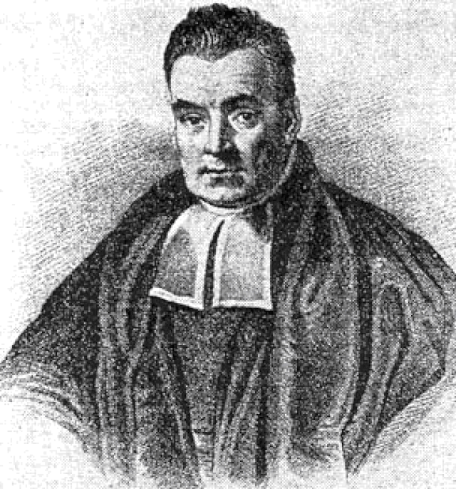

Finding Lost Sailors Using Naïve Bayes
In 1763, Richard Price, a moral philosopher, introduced the essay, “An Essay Towards Solving a Problem in the Indoctrine of Chances,” by Thomas Bayes.  / Naïve Bayes theorem is now a fundamental tool in statistical and Machine Learning. However, the origins of this tool are very unexpected. This theorem was invented by an English Presbyterian minister in an attempt to prove God’s existence. Thomas Bayes passed away in the year 1763, however, his essay was posthumously published in 1766 by Price. However, during the time of its publication, the essay was not given it’s right recognition, as the mathematics was too extensive to prove. It wasn’t until the invention of the modern computer, with fast processors, that we found the full potential of this mathematical tool.
So what Is Naïve Bayes Theorem?
This theorem allows us to mathematically incorporate data correctly, and calculate the probabilities of an event. It’s a tool that is versatile because it penetrates almost all questions that come to mind, from healthcare-related probabilities to coding to presidential elections. The Bayes’ rule helps us determine the probability that something is true with a given set of events.
\( P(A|B) = \frac{P(B|A) \cdot P(A)}{P(B)} \)
Here, A is the hypothesis and B is data. \( P(A|B) \) means the probability of A given B. \( P(B|A) \) means the probability of B given A.
\( P(\text{Cancer}|\text{Positive Test}) = \frac{P(\text{Positive Test}|\text{Cancer}) \cdot P(\text{Cancer})}{P(\text{Positive Test})} \)
So here the initial probabilities would be based on clinical outcomes.
Let’s do a few sample problems to get a gist
Problem 1: Breast Cancer Outcomes
Suppose a mammography screening test for breast cancer has a sensitivity of 90% and a specificity of 93%. The prevalence of breast cancer in the population is 1%. A woman undergoes a mammography screening and the test results come back positive. What is the probability that she actually has breast cancer?
Solution:
Let's define the following:
- P(A) = Probability of having breast cancer = 0.01 (prevalence)
- P(B|A) = Probability of testing positive given breast cancer = 0.90 (sensitivity)
- P(¬A) = Probability of not having breast cancer = 1 - P(A) = 0.99
- P(B|¬A) = Probability of testing positive given no breast cancer = 1 - specificity = 1 - 0.93 = 0.07
Now, let's apply Bayes' theorem:
P(A|B) = (P(B|A) * P(A)) / [P(B|A) * P(A) + P(B|¬A) * P(¬A)]
Substituting the values:
P(A|B) = (0.90 * 0.01) / [(0.90 * 0.01) + (0.07 * 0.99)]
P(A|B) ≈ 0.1136
So, the probability that the woman actually has breast cancer given a positive mammography screening result is approximately 11.36%.
Problem 2: Weather Outlook
Marie is getting married tomorrow at an outdoor ceremony in the desert. In recent years it has rained only 5 days, each year (5/365 = 0.014). Unfortunately, the weatherman has predicted rain for tomorrow. When it rains the weatherman correctly forecasts the rain 90% of the time. It is 10% of the time when it predicts it incorrectly. What is the probability that it will rain on Marie’s wedding?
Solution:
Given:
- P(rain) = Probability of rain = 0.014
- P(Prediction|rain) = Probability of correct prediction given rain = 0.90
- P(¬rain) = Probability of no rain = 1 - P(rain) = 0.986
- P(Prediction|¬rain) = Probability of incorrect prediction given no rain = 0.10
Using the provided equation:
P(rain|Prediction) = (P(Prediction|rain) * P(rain)) / P(prediction)
Calculate the denominator \( P(prediction) \):
P(prediction) = P(Prediction|rain) * P(rain) + P(Prediction|¬rain) * P(¬rain)
P(prediction) = 0.90 * 0.014 + 0.10 * 0.986 = 0.0126 + 0.0986 = 0.1112
Substitute \( P(prediction) \) back into the equation:
P(rain|Prediction) = (0.90 * 0.014) / 0.1112
P(rain|Prediction) = 0.0126 / 0.1112 ≈ 0.1132
So, the probability that it will rain on Marie's wedding given the weatherman's prediction is approximately 11.32%.
The project
In this section, we will be reviewing Naïve Bayes using Python Libraries, and the situation will be the search and rescue efforts of a fisherman. This project is found in the book, “ Real World Python, a Hacker’s Guide to Solving Problems with Code,” by Lee Vaughan. This is the first Chapter of the book.
The Scenario of the Project
A fisherman has gone missing off the coast of a nation called python. It is our job as the coast guard to find this person. We have already determined a location he was in 6 hours ago, based on his wife’s statements. In the last call, he radioed that he was abandoning ship but we have no clue whether he is in a life raft or whether he is floating in the sea. Even though the water is warm around this time of the year, there is still a risk of hypothermia if the fisherman is floating in the water, especially if that’s for 12 hours or more. If the fisherman is wearing a floatation device, he can last in the water for 3 days. The currents in the sea off of Cape Python are causing the waves to be choppy, leading to us having a hard time spotting a human in the water despite visibility being good. The wind is blowing from the southwest direction. Usually in the real world, the Coast Guard uses a system called SAROPS, an abbreviation for Coast Guard Search and Rescue Optimal Planning System. This software it’s great because it uses factors like wind tides currents, and whether the body is underwater or on the surface. This allows it to create rectangular search areas in calculating the probabilities of finding lost sailors at Sea, and this allows the most efficient flight patterns to search for them. So in this particular scenario SAROPS has identified at least three search areas and hear what we will do is write the program to apply the base rule to it. We already have enough resources to search for two of the three areas but will have to decide how to allocate those resources so the cost versus value has the best outcome.
The Strategy
Given the vastness of the sea, locating sailors or lost passengers can be a daunting task, akin to finding a needle in a haystack. Initially, we work with target probabilities based on the sealer's last known location, updating them as we obtain search results. However, if the search yields nothing, the likelihood of the sailor being in a different area increases. This mirrors real-life situations where complications arise, potentially leading to inefficiencies in search efforts. In such cases, valuable time may be lost, and the risk to the lost sailor may escalate. This is why the Bayes equation is so important because this way you have a better idea of where to search and you’re not using emotions or throwing shots in the dark. So to aid the search in this stimulation here is what we will do, Optimize the OpenCV Library to build an interface to work with the program. OpenCV stores properties as rows, columns, and channels. Usually, the interface can be very simple, but we would want to have a map of this cape and the search area where we can use this map to sort of display the last position when he was lost and the position where he was found. Open CV is a great library because it allows you to display images drawings and text.